Viewing data in 3D
The background to viewing data in 3D will be covered in the lecture segment at the beginning of the class, and the presentation and any other supporting materials will be available in Minerva. The lecture segment should help you to understand why you are doing these exercises. If you still aren’t sure, please ask Clare.
Learning outcomes
When you have completed this section of the workbook you should be able to
- demonstrate how data can be displayed in 3D with GIS tools
- explore data in 3D
- save a 3D view and add it to a map layout or export for use in other applications
Introduction
On 18th May 1980 the long dormant volcano, Mount St. Helens in the north west United States of America, erupted. Over the course of several weeks lateral blasts from the eruption destroyed the forested slopes and the volcano covered a large area in lava and ash.
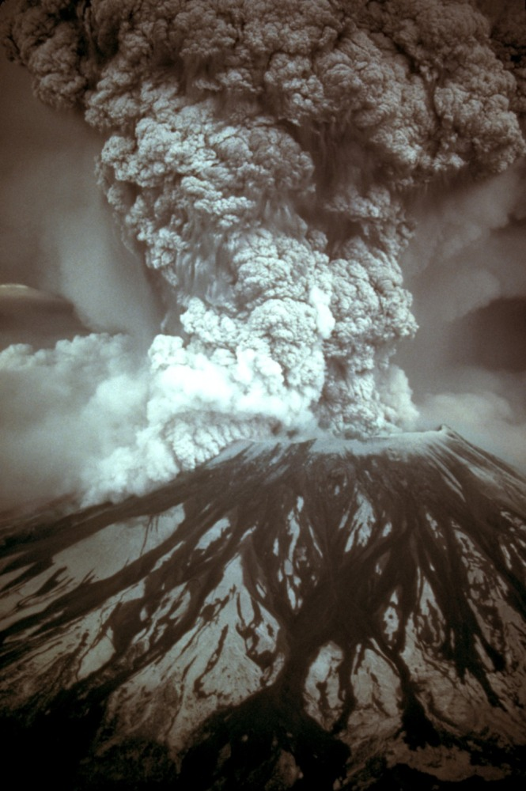
The USGS has a downloadable file with more information about the eruption.
The Cascades Volcano Observatory has a lot more information and images of Mount St. Helens, including sections on hazards, monitoring, geology and history.
In this exercise we’ll use the tools in ArcGIS Pro to investigate the changes in the shape of the mountain caused by the eruption. We’ll use USGS (United States Geological Survey) height data measured before and after the eruption, as well as the height data provided by ESRI within ArcGIS Pro.
Obtaining the data for this exercise
Download the MtStHelens.7z file from Minerva. Save it to your file space and unzip it.
The data for this exercise has been obtained from SERC Carlton teaching resources.
The data can also be found on the webpages of the Geomorphological Research Group at University of Washington
The exercises are based on worksheets from the above URL and from ESRI Canada.
Setting up the map project
The zip file that you have downloaded and unzipped should include a file called MtStHelens.aprx.
Open this now1 and you should see that there isn’t yet data on the map. If you check the map properties you should be able to see that the project has already been set up to use the correct coordinate system. in this case NAD 1983 UTM Zone 10N. NAD = North American Datum and UTM = Universal Transverse Mercator2. I’ve changed the map name to show the coordinate system - this can be a very useful thing to do if you’re likely to need to keep track of it throughout your project.
- Add the
hbeforeandhafterfiles to the map fromFolders > MtStHelens > Datasection in the contents pane. - Switch the layers on and off to have a look at the changes between the before and after shapes as they are visible at the moment.
These are raster layers where each pixel contains the elevation of the land at that point.
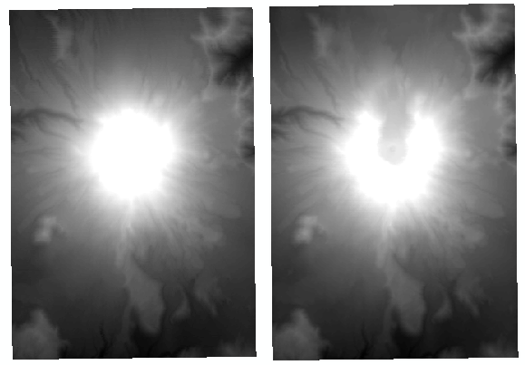
Symbolising the raster layers
At the moment the height layers, the rasters that you have just added, will be coloured the default shades of grey. There are other colour ramps available which will make the elevation clearer.
- Select the
hbeforelayer in the contents pane - go to the
Appearancetab of the ribbon and click onSymbology - In the symbology dialog check that the
Primary Symbologyis set toStretch - drop down the list of choices next to
Color scheme, click onShow namesat the bottom, then selectElevation #1from the list - Click on the dropdown next to
Stretch typeand selectMinimum Maximumto use the full range of values in your raster.
Your settings should look something like the image below.
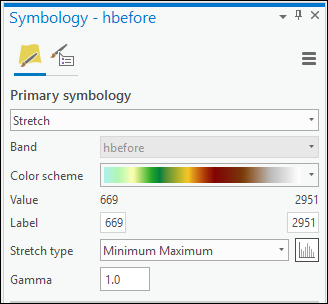
Set symbology for after
Repeat the process above to symbolise the hafter elevation raster file.
You have on your map two layers which show similar data and which you may want to compare. To do this it would be useful to have the symbology, and also the legend later, set to the same scale. At the moment:
- hbefore = 669 to 2951
- hafter = 682 to 2543
To put both elevation maps onto the same scale do the following:
- select the
hbeforelayer in the contents and go to the symbology panel - below the other settings there is a panel for
Statistics - Drop down the
Statisticsoptions and chooseCustom - The
MinandMaxboxes below should become editable - Change the
Minto a round number which is less than the minimum of either dataset, e.g.600 - Change the
Maxto a round number which is greater than the maximum of either dataset, e.g.3000
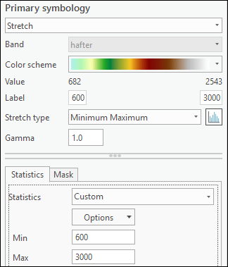
You should notice a change in the symbology of the layer. For some reason, the contents list will still give the same min and max, though. So to update the legend and contents do the following:
- in the
Primary Symbologybox above change the values in the boxes to your minimum and maximum values.
Changing the default symbology
Repeat the above with the
habovelayer - putting the same minimum and maximum values.If you look at both layers on your map now you should be able to see the difference between before and after the eruption more clearly.
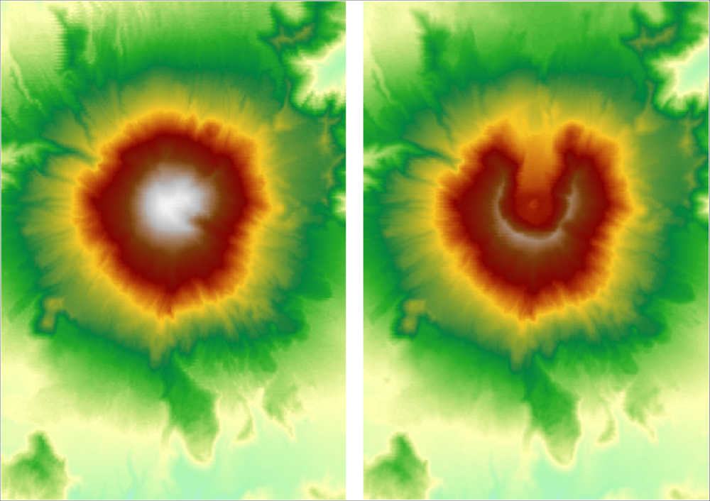
Creating hillshading
It is possible to see from the height files that you have already added to your map some differences in the before and after topography, but they do not give a very clear view. Hillshades can give a much clearer picture of the topography of an area (and incidentally can give a better idea of the quality of your height data).
Geoprocessing > 3D Analyst Tools > Surface > Hillshade- Fill in the dialog with
hbeforeas the input. - Select where you want to save the input and give it a name.
- Leave the other fields as they are for now.
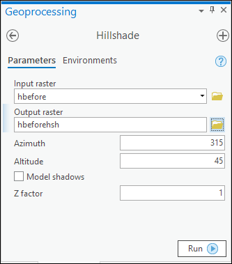
- Click
Run. The tool should run and add a new layer to your map.
The resulting layer should show the shape of the land more visibly than the original raster layer.
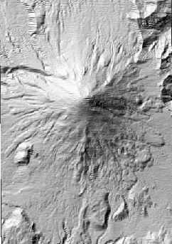
Hillshade
Repeat the hillshade process with the
hafterraster file.
Have a look at both hillshade layers. The difference in the shape of Mount St. Helens before the eruption and after should be becoming clearer.
Hillshade light source
Incidentally, notice that the light source on the hillshade layer comes from the top-left of the image - which is usually the north-west, a direction from which the sun very rarely shines.
This direction gives the best effect of 3D for an image. If you try turning a hillshaded map upside down so that the sun comes from the south-east, very often valleys will look like hills and hills will look like valleys.
Symbolising the hillshade
You could symbolise the hillshade directly to make a “prettier” map, but you often get a better result by symbolising the DEM (height data), then putting the hillshade underneath it and making the DEM something like 40% transparent.
- Make the “after” layers invisible (turn them off in the contents list) and try symbolising the “before” layers first.
- If you haven’t already, symbolise the
hbeforeheight layer with a stretched colour ramp and set it to 40% transparency on theAppearancetab .
Now try turning the hillshade layer on and off and have a look at how much difference it makes to how you can perceive the landscape.
If you still have the World Hillshade and Topographic Map layers on your map from the ESRI basemap you’ll also see who those interact with your data. Try turning those off and on too.
Symbolising the hillshade
Try the same with the “after” layers to symbolise those with the hillshade.
As usual - experiment!
Area and volume calculations
It’s good to be able to look at the differences on a map, but what about actually doing some measurements and getting some figures out of the data? Arc’s toolbox gives us the tools to be able to calculate the volume of Mount St. Helens before and after the eruption.
- If you don’t have the toolbox open already find it by going to the
Analysisribbon and clicking onTools Geoprocessing > 3D Analyst Tools > Functional Surface > Surface Volume- Fill in the dialog with
hbeforeas the input. Don’t worry about saving the output this time - you’ll make a note of it from the results window - The
Reference Planecontrols how the volume is measured - to see more click on the question mark symbol at the top of the tool dialog - the appropriate help page should open in your browser.
- In this case the page shows you the difference between setting the reference plane to either above or below.
- Return to Arc and set the
Reference PlanetoAbove the Plane - Having set this it is also a good idea to set the
Plane Height. In this case set it to669, which is the lowest elevation in the hbefore DEM - check the contents pane to find this. - Finally click on
Run
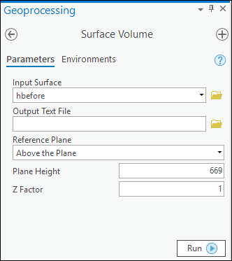
- Don’t close the panel when the tool finishes running. Instead use the output window, which you can find by clicking on
View Detailsat the bottom of the processing tool, to make a note of the results.
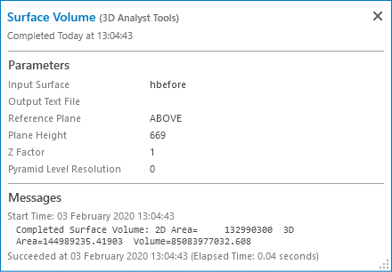
Results of area and volume calculations - Before
Make a note of the following results for the
Beforelayer2D area
3D area3
Volume
The results will be in map units. Check the units by going to the map properties and checking the General tab. In this case it should be metres.
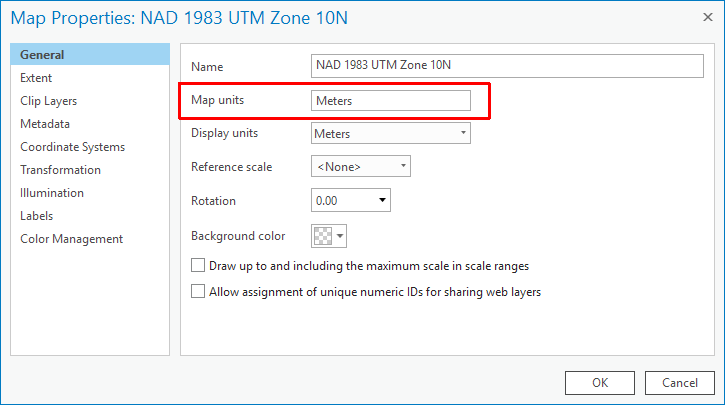
Repeat the process for hafter, leaving the Plane Height as 699, and again make a note of the results.
Results of area and volume calculations - After
Make a note of the following results for the
Beforelayer2D area
3D area
Volume
Have a look at the two sets of results and compare them.
Looking at your results
What differences are there? What can you say about the change in area/volume before and after the eruption?
Profile graphs
Another way to view topography is to draw a profile. This will allow you to see a profile of the land surface along a line, and in this case allows you to view profiles for before and after the eruption.
- Start by creating a new line feature class in the project geodatabase, making sure that the coordinate system matches the one used for the map, and drawing a line from north to south across the DEM.
- From the Analysis ribbon click on
Toolsand go to theInterpolate Shapetool viaGeoprocessing > 3D Analyst Tools > Functional Surface > Interpolate Shape - Fill in the dialog as follows:
- The
Input surfaceshould be the Before DEM Input Featuresis the line across the DEM that you have just drawn- Give your
Output Feature Classa name which reminds you that it is based on the Before layer - The other defaults are fine so click the
Runbutton
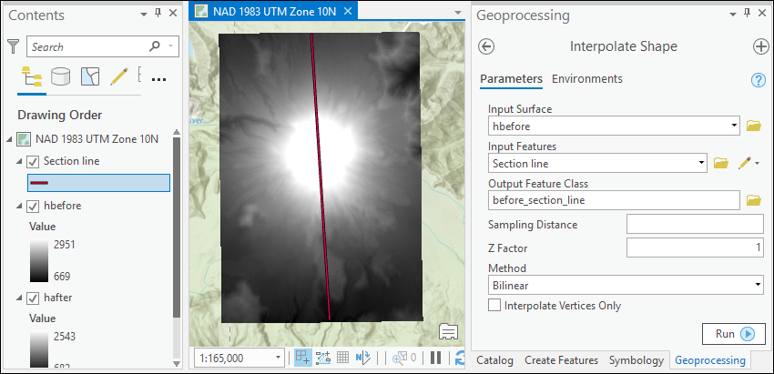
You will have created a new line feature class which should be added to your map. If it isn’t, then drag it across from the Catalog to the Contents pane. At this stage your map won’t look much different.
To create the profile:
- Select the new
Beforesection line in the Contents and right-click on it Create Chart > Profile Graph
Arc should open a new panel below your map which contains the resulting profile across the Before DEM.
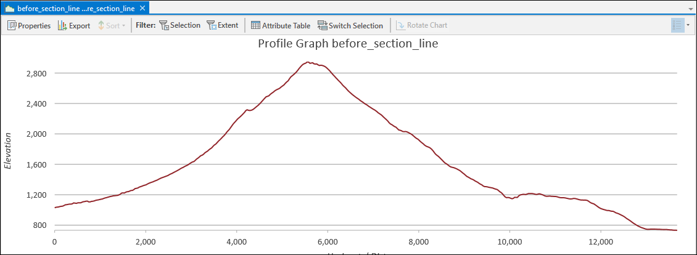
If you click on Properties at the top of the panel you can change the format and title, as well as other items.
By clicking on Export you can save the profile graph as a graphics file, e.g. svg (which can then be opened in Inkscape), png or jpg (both of which can be added to Word and Powerpoint documents).
Profile across the After DEM
Repeat the process to create a profile graph for the DEM showing the height After the eruption.
Once you have created a graph it is listed in the Contents pane under the layer to which it applies. If you close it, you can open it again by clicking on the appropriate graph in the Contents.
Comparing the graphs
Have a look at both of the graphs you have created. Resize them and use the properties to give them appropriate titles and axis labels.
Viewing your map in 3D
Within Arc it is possible to view your maps in 3D by creating a Scene. We’ll look at this now with the data you have already, but it’s something you can do with any data that you create in future too.
Viewing your map in 3D in ArcGIS Pro
This video clip can be found in the module area of Minerva or in the full list of video clips.
Creating a Scene
To set up an empty scene within your existing Mount St. Helen’s project.
- Go to the
Inserttab of the ribbon - Click on the down arrow under the
New Mapbutton - Click on
New Local Scene
Arc will create a new screen which currently looks very much like a new map - see the picture below. Note that the new scene appears under the Maps subheading in the Catalog. In the Contents pane the Drawing Order view now shows layers divided into 3D Layers and 2D Layers.
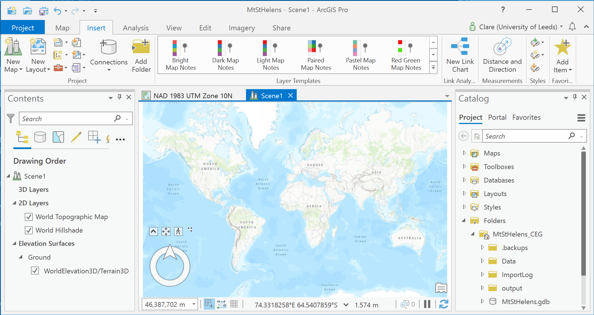
Adding layers to a scene
You can add layers to a scene in exactly the same way as adding them to a map.
- Find your hillshade layers in your catalog pane and drag and drop them into the scene
You should find that your scene zooms to the correct location for Mount St Helens and you can view the hillshade layers.
Navigating in a scene
ArcGIS Pro Help has full information on how to navigate in 3D.
The main difference from navigating in a map is that you can use the mouse wheel to “tip up” the map and rotate it, or use the navigation tool at the bottom left of the map to move around.
- Try this now. Move around the map and view it from various different angles.
It should quickly become obvious that the hillshade layers are draped over the landscape as it is now.
- For now, turn off both hillshade layers so that you can see the basemap.
Changing the background layer
You can also change the Basemap in exactly the same way as you can change it in a map.
Changing the basemap
Change the basemap to
Imagerynow and use the navigation tools to zoom in to Mount St Helens so that you can view the scene from a lower angle.
Controlling the elevation surface
You’ll notice that Arc sets a default elevation surface - i.e. data which controls the terrain or 3D surface. It is possible to make changes to this, and indeed to set your own elevation surface.
To change any of the properties of the elevation surface:
- select
Groundunder theElevation Surfacesheading at the bottom of the contents panel - Click on the
Appearancetab on the ribbon to get the properties for the elevation surface.
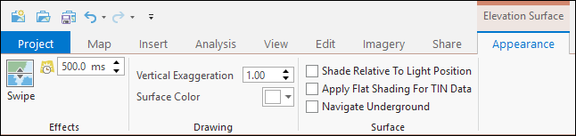
Vertical exaggeration
The default vertical exaggeration is 1.0 - which basically means as is reality.
Whilst scientifically this is usually the best setting to use, sometimes you need to exaggerate the terrain to make it easier to visualise useful information.
- In the Scene Appearance tab, change
Vertical Exaggerationto4.0
You’ll probably need to be patient again while the Scene redraws, then zoom outwards so that you can see Mount St Helens again!
The difference between an exaggeration of 1.0 and an exaggeration of 4.0 should be pretty clear.
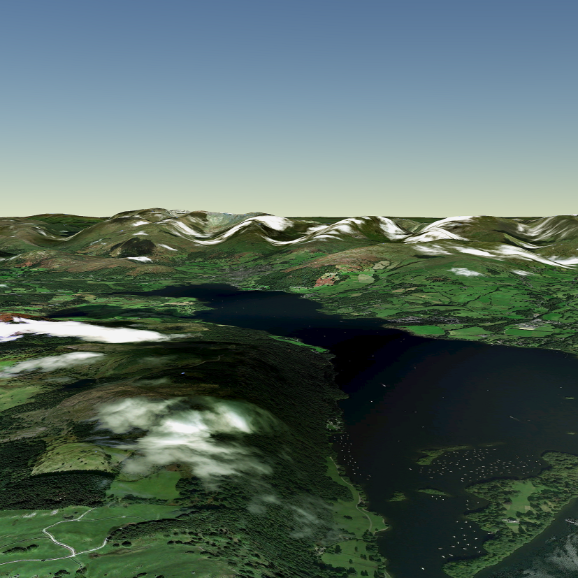
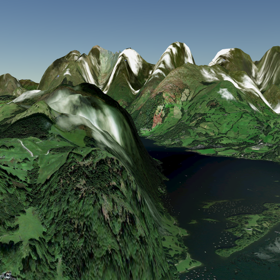
Adding a custom elevation surface
Sometimes it is more useful to see your own data as the elevation surface. For example, we can add the DEM showing the shape of Mount St Helens before the 1980 eruption.
- right-click on
Groundunder theElevation Surfacesheading at the bottom of the contents panel Add Elevation Sourceand navigate to the data folder to select thehbeforeraster dataset then clickOK
This may look a bit odd as you’ll still have the ESRI Imagery layer showing the current land surface, but the crater at the top of Mount St Helens should apparently have been filled in.
Try turning on the hillshade layer showing the before data.
If you add a custom elevation surface, but leave the World Elevation layer on, then areas ouside of your DEM will still have elevation.
Turn off the before layers for both hillshade and the elevation surface before continuing with the next section.
Alternative elevation surfaces
The elevation surface doesn’t have to be the same as the land surface. For example, instead you could use a surface showing the top surface of a particular rock unit underground; average annual rainfall; lead pollution in soils.
Cut-fill analysis
Cut-fill analysis looks at how much material is lost or gained in an area by comparing two surface models - one before the change, and one after. It could be used to look at deposition in a lake or changes in groundwater over time, for example. Here we’ll use it to visualise the difference in land surface before and after the 1980 eruption of Mount St Helens.
- On the Analysis ribbon click on
Tools - in the Geoprocessing toolbox go to
3D Analyst Tools > Raster Surface > Cut Fill - Fill in the dialog as follows (see image below):
- For
Input before Raster Surfaceuse the folder button on the right to select the before DEM - For
Input after Raster Surfaceuse the folder button on the right to select the after DEM - Give the
Output rastera name you’ll remember and choose to save it in one of the folders in your project
- For
- Click on
Run
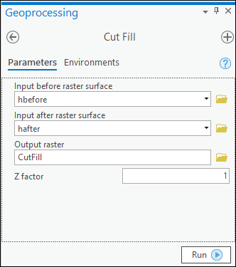
The results should look something like the image below. The key underneath shows what the different colours indicate.
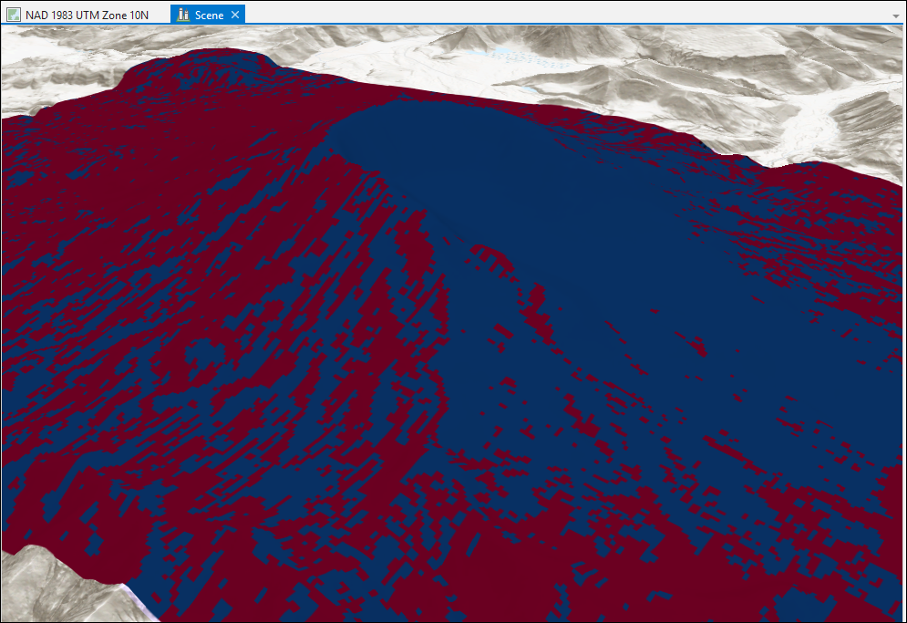
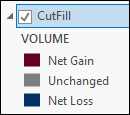
The red areas show a net gain, the blue a net loss, any grey areas would be unchanged. This layer could complement the volume measurements that you gained in the section on Area and volume calculations.
Including a scene in a layout
It is possible to include your scene in a layout in exactly the same way that you can include a map.
From within a layout:
- Click on the arrow underneath the
Map Framebutton on theInserttab of the ribbon - In the list that appears choose a
Scene - then wait a while for it to appear on your layout!
You can move the scene around and resize it on the layout in exactly the same way that you can move and resize a map frame.
- If you want to change the view then you need to right-click on the
Map Framewhich contains your scene andActivate, exactly as you would for a flat map - Once you’ve done this you can use the usual 3D navigation tools to move the view around
- When you’ve finished, click on
Layoutat the top left of the layout to return to the layout view
You can export or print the layout in the usual way.
Exporting a 3D view
Once you have a useful view in a Scene you can export it as an image to import into other programs, such as Inkscape, Word or Powerpoint, without having to set up a layout to do so.
- Go to the
Sharetab of the ribbon - Click on the
Mapbutton in theExportgroup - choose where you want to save the output, and what format you want (png or jpg will import into Word or Powerpoint)
- Check the
Resolution- higher gives better quality, but a bigger file. Experiment, but don’t go higher than 600 without being very careful. 300 is usually enough. - Click
Export
Other suggestions for analysis
Arc contains a large number of tools for working with data. Try out some of the following and think about how you could use them with other datasets.
If you are not sure what information you need to enter in a particular field in a tool dialog click on information symbol which comes up when you hover over a field. That will give you a brief explanation. If you are still stuck then try clicking on the question mark at the top of the tool and you should be taken to the full information in online Help.
Creating contours
Try creating height contours for the before and after DEMs of Mount St. Helens
Hint: Geoprocessing > 3D Analyst Tools > Raster Surface > Contour
This can be very useful if you have a DEM but no contours and want to create a base map for mapping. You can also use this to create contours for other data surfaces, such as soil samples, rainfall etc.
Viewshed analysis
Viewshed analysis shows which parts of a scene an observer at a particular point would be able to see.
Try creating a point feature class and placing a point somewhere on the map of Mount St. Helens.
Then go to Geoprocessing > 3D Analyst Tools > Visibility > Viewshed
Slope and aspect
Both of these tools produce an output raster.
Slope shows the angle of slope of steepness of each part of the map. A slope map of Mount St. Helens could indicate which areas are most vulnerable to a landslip.
Aspect shows in which direction the slope is facing.
Both are under Geoprocessing > 3D Analyst Tools > Raster Surface
Layout suggestions
You have created a lot of output in this exercise. Try and think about ways in which you can create an attractive layout showing the effect of the 1980 eruption on the shape of Mount St. Helens.
- Try putting together a layout that includes the before and after hillshades symbolised with the DEMs.
- Include a 3D view of the scene in your layout
- Include before and after profiles taken across the same line from north to south
- Add an extent rectangle making use of an outline country map from naturalearthdata.com. Show the location of Mount St. Helens within the United States.
Your final map could look something like the map below. It is unlikely to look identical as you should make your own decisions about where to place elements and how to display the data that you have produced.
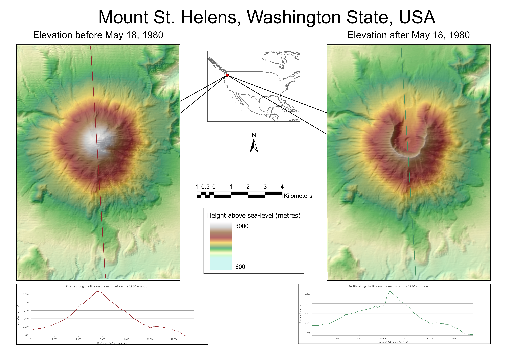
-
If you double-click on the .aprx file it should open in ArcGIS Pro. ↩
-
View a map showing the UTM zones for the whole world. ↩
-
3D area takes the height into consideration so should give a greater number than simply measuring the area in 2D. ↩